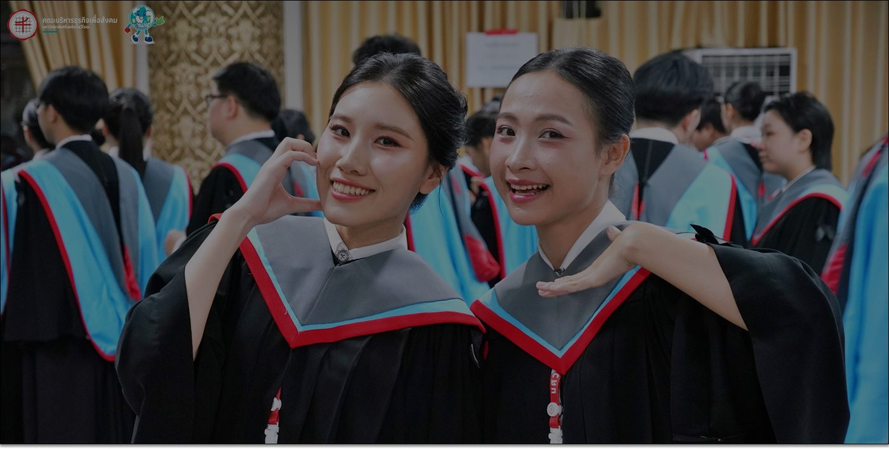
ต้นปีการศึกษา
Orientation & Welcome Week
ปฐมนิเทศและสัปดาห์ต้อนรับ
ปฐมนิเทศนิสิตใหม่ ครอบคลุมทุกหลักสูตร
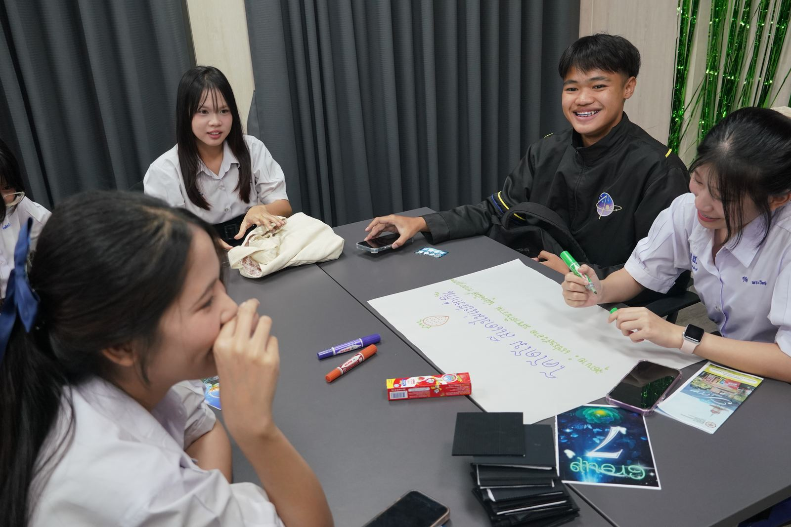
Beyond the Classroom
ชีวิตนิสิต
เรียนรู้ เชื่อมโยง และเติบโต — ประสบการณ์ของนิสิต BAS SWU นอกห้องบรรยาย
Student Services บริการนิสิต ทะเบียน ทุนการศึกษา คำปรึกษา และเอกสารStudent Activities
กิจกรรมนิสิต
ไฮไลต์จากองค์กรนิสิตและกิจกรรมระดับคณะตลอดทั้งปี

ปฐมนิเทศและสัปดาห์ต้อนรับ
ปฐมนิเทศนิสิตใหม่ ครอบคลุมทุกหลักสูตร
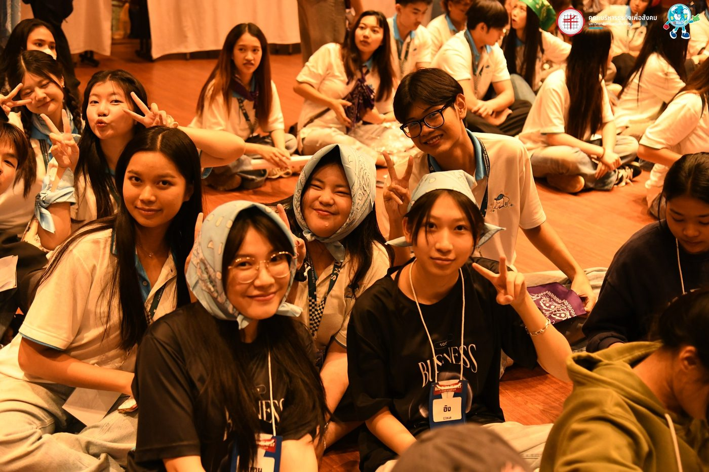
การแข่งขันเคสธุรกิจ
ทีมข้ามหลักสูตรแข่งขันแก้โจทย์ธุรกิจจริง และนำทฤษฎีไปใช้ในโปรเจกต์ประยุกต์
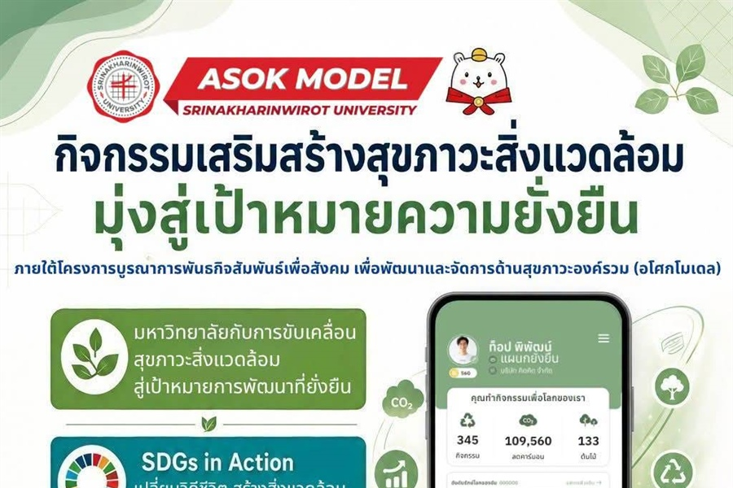
กิจกรรมเพื่อสังคมและความยั่งยืน
โครงการร่วมกับชุมชนและ Green Office เช่น Asok Model
Clubs & Societies
องค์กรและชมรมนิสิต
องค์กรที่บริหารโดยนิสิตเปิดพื้นที่ให้ทุกคนได้เป็นผู้นำ ตั้งแต่การจัดกิจกรรมไปจนถึงการสร้างเครือข่ายกับรุ่นพี่ศิษย์เก่า
Campus Facilities
สิ่งอำนวยความสะดวก
จากพื้นที่ทำงานร่วมกันในอาคารนวัตกรรม ไปจนถึงย่านสุขุมวิทโดยรอบ
พื้นที่ Co-working
ที่นั่งสบาย อินเทอร์เน็ตความเร็วสูง และโซนสำหรับทำงานเดี่ยวหรือกลุ่ม
หอสมุดกลาง
โซนอ่านหนังสือเงียบ และห้องกลุ่มปรับอากาศพร้อม Wi-Fi
โซนบอร์ดเกม
พื้นที่พบปะในหอสมุด สำหรับเล่นเกมและพักผ่อนระหว่างคาบ
โรงอาหาร
อาหารไทยราคาย่อมเยา เปิดช่วงเช้าถึงบ่าย วันจันทร์–ศุกร์
Alumni
ศิษย์เก่าที่โดดเด่น
เส้นทางอาชีพของศิษย์เก่าที่สร้างผลกระทบทางธุรกิจและสังคม — ชุดวิดีโอ Inspiring Alumni By SWUBAS จากทุกหลักสูตร
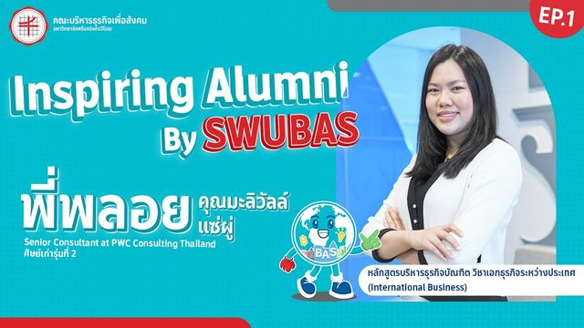
B.B.A. International Businessศิษย์เก่าธุรกิจระหว่างประเทศ (วิดีโอ YouTube เปิดในแท็บใหม่)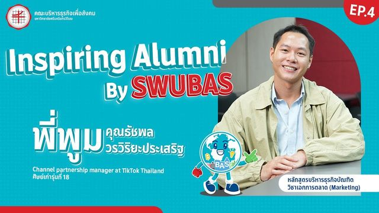
B.B.A. Marketingศิษย์เก่าการตลาด (วิดีโอ YouTube เปิดในแท็บใหม่)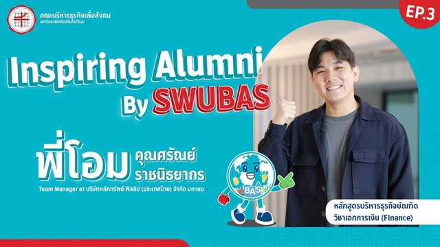
B.B.A. Financeศิษย์เก่าการเงิน (วิดีโอ YouTube เปิดในแท็บใหม่)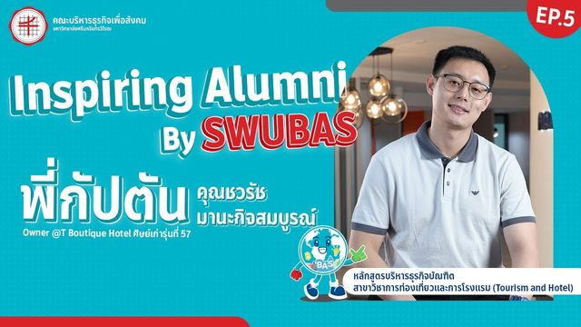
B.B.A. Tourism & Hotelศิษย์เก่าการท่องเที่ยวและการโรงแรม (1) (วิดีโอ YouTube เปิดในแท็บใหม่)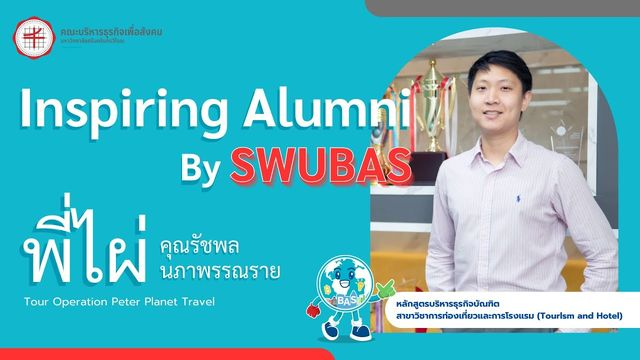
B.B.A. Tourism & Hotelศิษย์เก่าการท่องเที่ยวและการโรงแรม (2) (วิดีโอ YouTube เปิดในแท็บใหม่)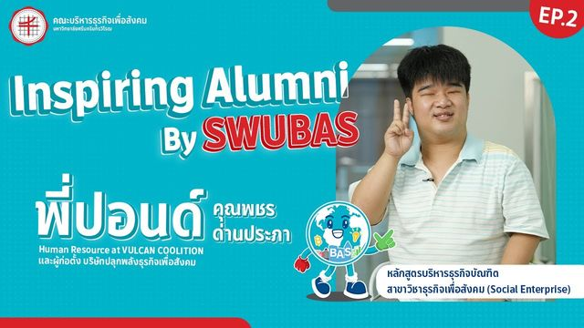
B.B.A. Social Enterpriseศิษย์เก่าธุรกิจเพื่อสังคม (วิดีโอ YouTube เปิดในแท็บใหม่)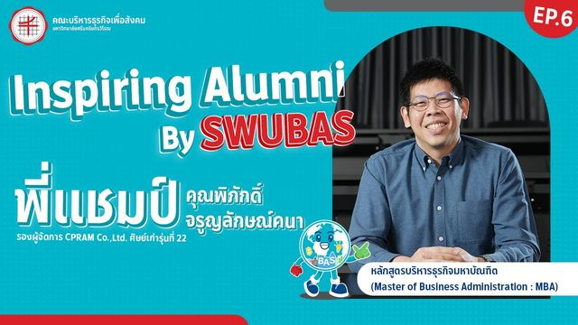
M.B.A.ศิษย์เก่าบริหารธุรกิจมหาบัณฑิต (วิดีโอ YouTube เปิดในแท็บใหม่)